| About IR |
| Editors |
| Author instructions |
| Copyright |
| Author index |
| Subject index |
| Search |
| Reviews |
| Weblog |
| Register |
| Home |
Volume 12 No 3 April, 2007
Thematic issue on Activity Theory, edited with the assistance of Mark Spasser
Shaun Kane
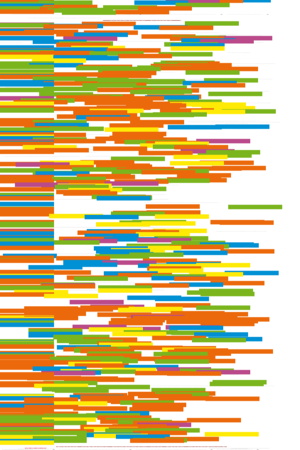Everyday inclusive Web design: an activity perspective
Gunilla Widen-Wulff and Elizabeth Davenport
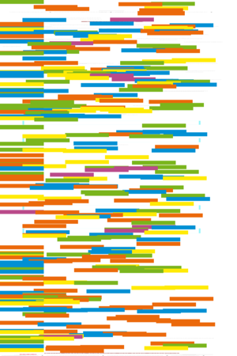Activity systems, information sharing and the development of organizational knowledge in two Finnish firms: an exploratory study using Activity Theory
Anja Mursu, Irmeli Luukkonen and Mikko Korpela
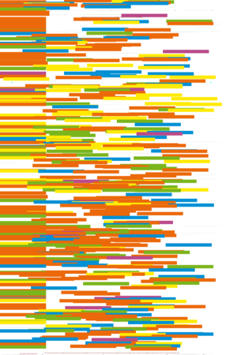Activity Theory in information systems research and practice - theoretical underpinnings for an information systems development method
Terry Von Thaden
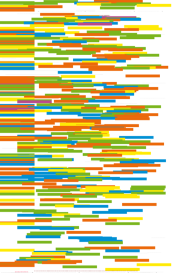Building a foundation to study distributed information behaviour
Eric M. Meyers
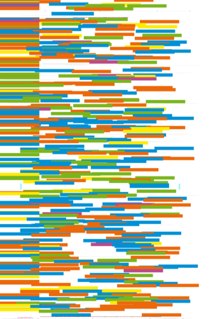From activity to learning: using cultural historical activity theory to model school library programmes and practices
Benny Karpatschof
Human activity - contributions to the anthropological sciences from a perspective of activity theory.
Other peer-reviewed papers
J.S. Chen and H.T. Tsou
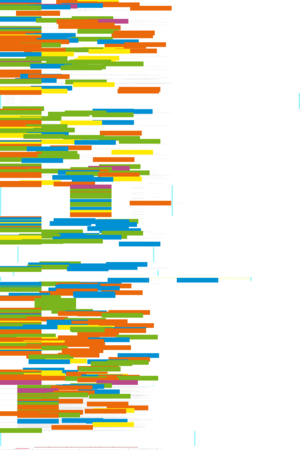Information technology adoption for service innovation practices and competitive advantage: the case of financial firms
Angel Freddy Godoy Viera and Johnny Virgil
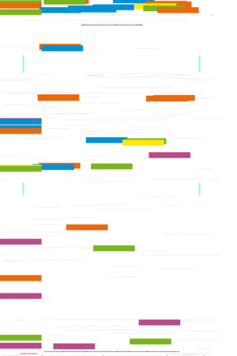Uma revisão dos algoritmos de radicalização em língua portuguesa
José Antonio Gómez-Hernández y Cristóbal Pasadas-Ureña
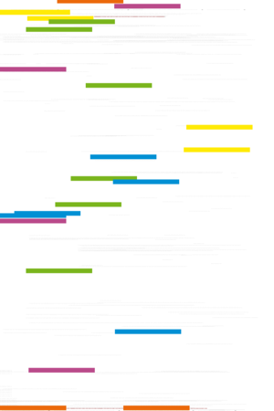La alfabetización informacional en bibliotecas públicas. Situación actual y propuestas para una agenda de desarrollo
Dong Hee Shin
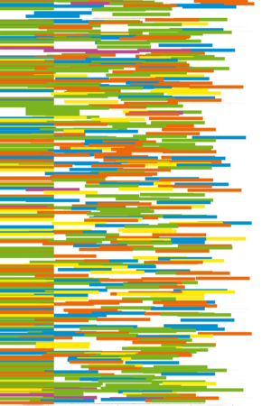A social dynamics of the development of community network: problems raised by a case of community network development.
J. Bronstein
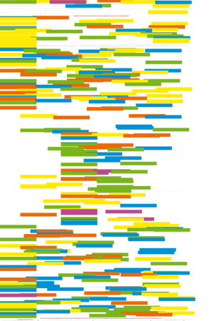The role of the research phase in information seeking behaviour of Jewish scholars: a modification of Ellis's behavioural characteristics.
Reijo Savolainen
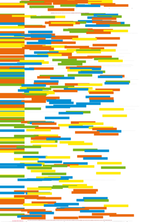Media credibility and cognitive authority. The case of seeking orienting information
Jela Steinerová and Jaroslav Šušol
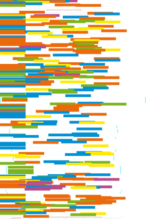Users' information behaviour - a gender perspective
 Case studies in open access publishing. Number three.
Case studies in open access publishing. Number three.
John Willinsky and Ranjini Mendis
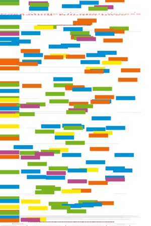Open access on a zero budget: a case study of Postcolonial Text
Resúmenes en Español
Watch this: artisanal animation — one of a series of occasional columns by Terrence A. Brooks of the Information School, University of Washington, USA.
Letter to the Editor: Calvin Mooers and the patent system
Looking for something else?
Reviews
Case, Donald O. Looking for information: a survey of research on information seeking, needs, and behavior. 2nd ed. Amsterdam: Academic Press, 2007.
Choo, Chun Wei. The knowing organization: how organizations use information to construct meaning, create knowledge, and make decisions. 2nd. ed. New York, Oxford: Oxford University Press, 2006.
Gorman, G.E. and Shep, Sydney J. (eds) Preservation management for libraries, archives and museums. Facet Publishing, 2007.
Herrero, L. Viral change: the alternative of slow, painful and unsuccessful management of change in organizations. Beaconsfield, UK: Meeting Minds, 2006.
Jaffe, Adam B. and Lerner, Josh. Innovation and its discontents: how our broken patent system is endangering innovation and progress, and what to do about it. Princeton, NJ: Princeton University Press, 2007.
Karpatschof, B. Human activity - contributions to the anthropological sciences from a perspective of activity theory. [Originally published Copenhagen: Dansk Psykologisk Forlag, 2000.]
Morville, P. and Rosenfeld, L. Information architecture for the World Wide Web. 3rd ed. Sebastopol, CA: O'Reilly, 2007.
Sawchuk, Peter H., Duarte, Newton and Elhammoumi, Mohamed, (Editors). Critical perspectives on activity theory: explorations across education, work, and everyday life. Cambridge: Cambridge University Press, 2006.
Srinivasa, Srinath. The power law of information: life in a connected world.New Delhi: Response Books, 2006.
TiddlyWiki 2.1.3. Osmosoft.com, 2007.
Verderber, Kathleen S., Verderber, Rudolf F., and Berryman-Fink, Cynthia. Inter-Act: interpersonal communication concepts, skills, and contents. 11th ed. Oxford University Press, 2007.
What's in the open access e-journals?
Conference announcements
A message to Conference organizers.
12th International Symposium for Health Information Management Research (iSHIMR). July 18 - 20, 2007. Sheffield, UK
European Bureau of Library, Information and Documentation Associations, European Association for Library and Information Education and Research and the Portuguese Association of Librarians, Archivists and Documentalists, Joint Conference, Lisbon, Portugal, 19-21 September, 2007
Check the other resources available at InformationR.net - free resources for information researchers. If you find Information Research useful please sign in and we'll notify you of future issues.
Contribute ideas and links to relevant resources on the Weblog. Join at
http://www.free-conversant.com/irweblog/
Information Research: an international electronic journal, is published four times a year by Professor Tom Wilson with technical support from Lund University, Sweden and editorial support from the Swedish School of Librarianship and Information Science, Högskolan in Borås.
| ||||
 |
|
Web Counter |
||